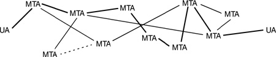

Networking Security Networking Security Networking Security Security Networking Security Networking Security Networking Charlie Kaufman Radia Perlman Mike Speciner Prentice Hall Network Security: Private Communication in a Public World, Second Edition
20.2. Store and Forward
The simplest implementation of electronic mail consists of sending a message directly from the source machine to the destination machine. In order for a message to be successfully delivered under that scenario, it is necessary for both the source and destination machines to be running, and reachable from each other on the network. This might be especially inconvenient if the user machines are only occasionally connected to the network, for example a portable PC that dials into the network periodically. Thus came the concept of electronic post office boxes. Instead of sending mail directly to the user's workstation, the mail is instead sent to a machine which is more or less permanently on the network. When the user's workstation attaches to the network, it reads the mail from the appropriate mail storage machine.
In general, the mail infrastructure consists of a whole mesh of mail forwarders. X.400 calls them Message Transfer Agents, or MTAs. The mail processing at the source and destination machines is done by a program known by X.400 as the User Agent or UA. Mail is not simply sent from the source machine to a mailbox machine for the destination. Instead, it gets forwarded from UA to MTA to ... to MTA to UA.

Some reasons for needing multiple MTAs along a path from source to destination are:
The path from source to destination might be intermittent. For instance, there might be portions of the network that are only occasionally connected, via some dial-up link. For security reasons, the MTAs might need to authenticate other MTAs as well as user machines. It might then be necessary to have a chain of MTAs to find a path from source to destination where each link is between a pair of MTAs that trust one another. For security reasons, a company might want a security gateway, a place through which all mail has to be forwarded. Usually the purpose of such a gateway is to prevent any access to the company's network except for mail. For instance, it would prevent people from logging in from a site external to the company's network. Different parts of the network might be using different protocol suites, for instance TCP/IP in some places and OSI in others.
There are interesting issues with how one supports routing with MTAs.
How do MTAs find out about "neighbor" MTAs? This is usually done with manual configuration, though potentially they might be able to find each other in a directory service. How do MTAs compute a path to a destination, or at least find the next "closer" MTA? Again, this is usually done with manual configuration.
|